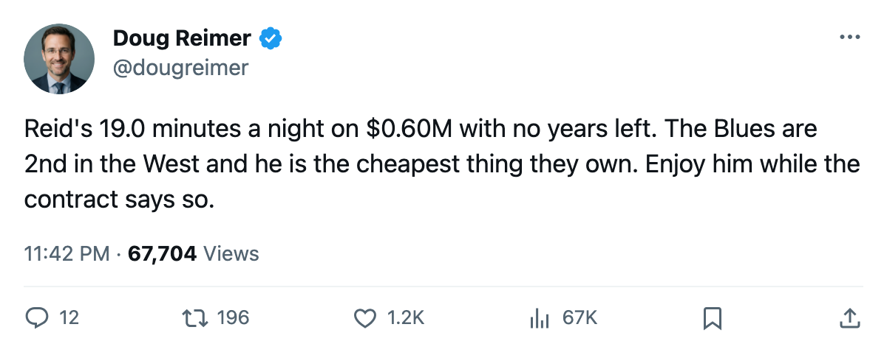
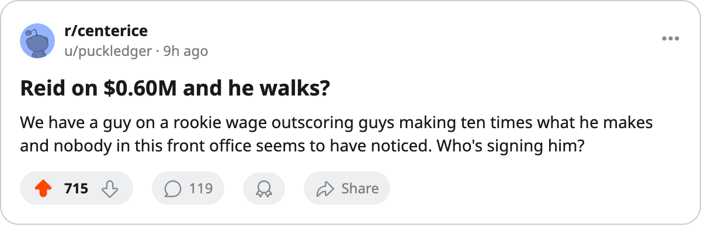

19 Minutes, 107 Pace, $0.60M: St. Louis Has the Lowest-Graded Scorer in the League's Top 12 and He Walks in June
Brandon Reid's 77 grade is the lowest of any man scoring at a 107 pace or above. His salary is $0.60M. His contract ends in 6 months.
 Doug ReimerAnalytics editor, ex-video coach · The Slot Report
Doug ReimerAnalytics editor, ex-video coach · The Slot ReportThe method is simple: rank the league's top 30 scorers by pace, then read the overall grade column. At a 107 pace or above, Brandon Reid77 of  St. Louis Blues carries a 77. Nobody else at that pace sits below 81.
St. Louis Blues carries a 77. Nobody else at that pace sits below 81.
Reid has 26 points in 20 games at 19.0 minutes a night. That ties him with  Peter Forsberg89,
Peter Forsberg89,  Paul Kariya83 and
Paul Kariya83 and  Alexei Yashin83 on pace, and puts him ahead of every other scorer the Bureau grades below 82. He does it on $0.60M with 0 years left on his deal. He was drafted 2000 #208, seventh round.
Alexei Yashin83 on pace, and puts him ahead of every other scorer the Bureau grades below 82. He does it on $0.60M with 0 years left on his deal. He was drafted 2000 #208, seventh round.
| player | overall | pace | points | gp | mpg |
|---|---|---|---|---|---|
 Markus Naslund87 [701] Markus Naslund87 [701] | 91 | 131 | 32 | 20 | 23.5 |
 David Legwand89 [570] David Legwand89 [570] | 88 | 121 | 28 | 19 | 21.4 |
 Glen Murray81 [693] Glen Murray81 [693] | 81 | 117 | 27 | 19 | 22.3 |
 Todd Bertuzzi89 [68] Todd Bertuzzi89 [68] | 93 | 115 | 28 | 20 | 23.4 |
 Joe Thornton86 [996] Joe Thornton86 [996] | 86 | 112 | 26 | 19 | 21.4 |
 Jarome Iginla92 [429] Jarome Iginla92 [429] | 88 | 111 | 27 | 20 | 23.0 |
 Keith Tkachuk88 [1002] Keith Tkachuk88 [1002] | 88 | 111 | 27 | 20 | 21.2 |
 Richard Zednik87 [1107] Richard Zednik87 [1107] | 82 | 111 | 27 | 20 | 23.0 |
| Brandon Reid [1211] | 77 | 107 | 26 | 20 | 19.0 |
Reid plays 2.2 fewer minutes a night than his linemate Keith Tkachuk and produces within 1 point of him. Tkachuk carries a Book grade of 88.
What changed between last year and this one
Reid scored 58 points in 73 games last season at 14.3 minutes a night. This year his ice time is back to 19.0 and his production has jumped from 58 in 73 to 26 in 20, a pace of 107 against last year's 65. The Development Index has him at +4 above his base grade. His two 99-grade attributes, acceleration and speed, are the same today as they were in the season the record logs as 70 points in 76 games. The role shrank. Now it's back.
Morale is 100. St. Louis Blues's club average is 97.0, the highest in the league.
The contract situation
$0.60M. 0 years left. Reid becomes an unrestricted free agent in June. St. Louis Blues's payroll is $69.76M, third-highest in the league, and their per-point cost sits at $2.41M. The Blues have $12.09M in profit and the 2nd seed in the West at 29 points.
STL also carries 2 players graded 83 or above with 1 year remaining, costing $13.30M between them. Those two deals and Reid's expiring contract all reach the same summer. The Blues will have to make decisions about all three inside 6 months.
Why this is a slotting problem
The Bureau grades Reid at 77. His potential is 94. The Index has moved him +4 this season and there is no sign the ceiling has been reached. A 7th-round pick with 99 acceleration, 99 acceleration and a 96 agility who skates 19.0 minutes is not a third-liner by any attribute the Bureau measures. He is slotted on the third line with second-power-play minutes and a fifth-position role. The gap between what the grades say he can do and what his ice time reflects is 2.2 minutes a night on a team that's 2nd in its conference.
The Blues have 29 team points. Reid accounts for 26 of those in 20 games. His personal cost, $0.60M against 26 points, is the kind of number the club's $2.41M aggregate per-point rate cannot absorb once he prices himself at market. The desk does not know what market is. The sheet does not either. It knows $0.60M and 0 years left.

